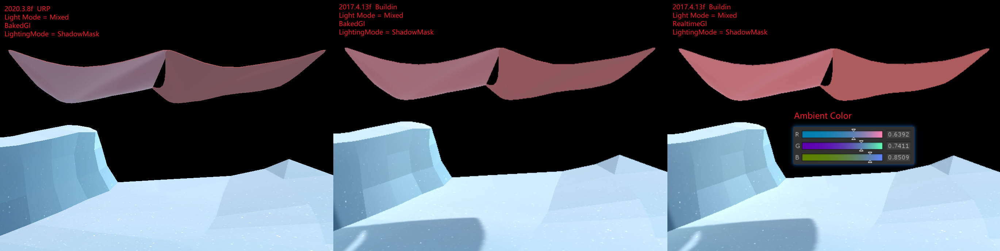
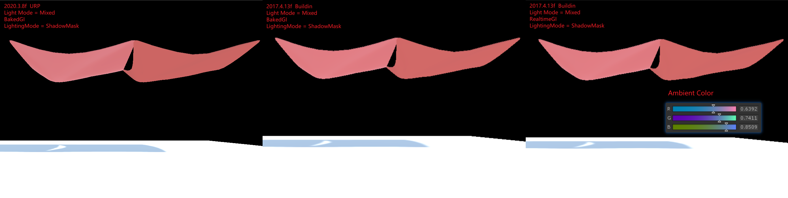
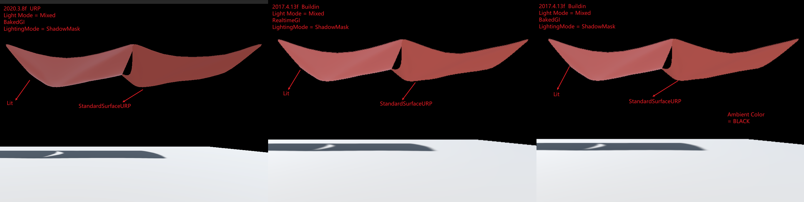
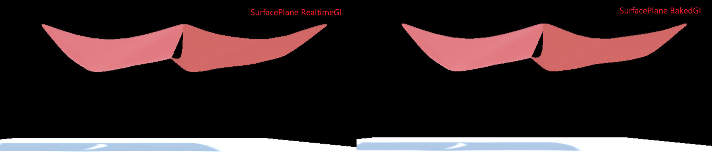

URP
URP note.
<!– more –>
URP
Base
源码分析
URP 12.1.6 版本中 ForwardRenderer 变为了 UniversalRenderer
- Unity URP 简要剖析 https://zhuanlan.zhihu.com/p/399297398
Native RenderPass
URPAsset
Runtime 修改 URPAsset 设置
using System.Collections; using System.Collections.Generic; using System.Reflection; using UnityEngine; using UnityEngine.Rendering.Universal; public static class UniversalRenderPipelineAssetExtensions { public static ScriptableRendererFeature GetRenderFeature<T>(this UniversalRenderPipelineAsset asset, string name) where T : ScriptableRendererFeature { var type = asset.GetType(); var propertyInfo = type.GetField("m_RendererDataList", BindingFlags.Instance | BindingFlags.NonPublic); if (propertyInfo == null) { return null; } var scriptableRenderData = (ScriptableRendererData[])propertyInfo.GetValue(asset); if (scriptableRenderData != null && scriptableRenderData.Length > 0) { foreach (var renderData in scriptableRenderData) { foreach (var rendererFeature in renderData.rendererFeatures) { if (rendererFeature is T && rendererFeature.name == name) { return rendererFeature; } } } } return null; } public static ScriptableRendererFeature SetRenderFeatureEnable<T>(this UniversalRenderPipelineAsset asset, string name, bool enable) where T : ScriptableRendererFeature { var feature = GetRenderFeature<T>(asset, name); if (feature) feature.SetActive(enable); return feature; } }
void EnableFeature(FeatureTag featureTag, bool isEnable) { var asset = GraphicsSettings.currentRenderPipeline as UniversalRenderPipelineAsset; switch(featureTag) { case FeatureTag.kColorRT: asset.supportsCameraOpaqueTexture = isEnable; break; case FeatureTag.kDepthRT: asset.supportsCameraDepthTexture = isEnable; break; case FeatureTag.kUpdateDepthRT: asset.SetRenderFeatureEnable<CopyDepth>("UpdateDepth", isEnable); break; case FeatureTag.kPlaneReflectionRT: //TODO break; } }
RenderFeature
Disable/Enable RenderFeature Runtime
screenShotRendererFeature.SetActive(enableSSRF);
Custom RenderFeature
template
using UnityEngine; using UnityEngine.Rendering; // old version namespace //using UnityEngine.Rendering.LWRP; using UnityEngine.Rendering.Universal; public class CustomRenderPassFeature : ScriptableRendererFeature { class CustomRenderPass : ScriptableRenderPass { public Mesh Mesh; public Material Material; // This method is called by the renderer before rendering a camera // Override this method if you need to to configure render targets and their clear state, and to create temporary render target textures. // If a render pass doesn't override this method, this render pass renders to the active Camera's render target. // You should never call CommandBuffer.SetRenderTarget. Instead call <c>ConfigureTarget</c> and <c>ConfigureClear</c>. public override void OnCameraSetup(CommandBuffer cmd, ref RenderingData renderingData) { } // This method is called before executing the render pass. // It can be used to configure render targets and their clear state. Also to create temporary render target textures. // When empty this render pass will render to the active camera render target. // You should never call CommandBuffer.SetRenderTarget. Instead call <c>ConfigureTarget</c> and <c>ConfigureClear</c>. // The render pipeline will ensure target setup and clearing happens in an performance manner. public override void Configure(CommandBuffer cmd, RenderTextureDescriptor cameraTextureDescriptor) { } // Here you can implement the rendering logic. // Use <c>ScriptableRenderContext</c> to issue drawing commands or execute command buffers // https://docs.unity3d.com/ScriptReference/Rendering.ScriptableRenderContext.html // You don't have to call ScriptableRenderContext.submit, the render pipeline will call it at specific points in the pipeline. public override void Execute(ScriptableRenderContext context, ref RenderingData renderingData) { CommandBuffer cmd = CommandBufferPool.Get(); cmd.DrawMeshInstanced(Mesh, 0, Material, 0, new[] { Matrix4x4.TRS(Vector3.zero, Quaternion.identity, Vector3.one) }); context.ExecuteCommandBuffer(cmd); CommandBufferPool.Release(cmd); } /// Cleanup any allocated resources that were created during the execution of this render pass. public override void FrameCleanup(CommandBuffer cmd) { } } CustomRenderPass m_ScriptablePass; public override void Create() { Debug.Log("Create"); m_ScriptablePass = new CustomRenderPass(); m_ScriptablePass.Mesh = Resources.Load<Mesh>("Cube123"); m_ScriptablePass.Material = Resources.Load<Material>("TestMaterial123"); // Configures where the render pass should be injected. m_ScriptablePass.renderPassEvent = RenderPassEvent.BeforeRenderingOpaques; } // Here you can inject one or multiple render passes in the renderer. // This method is called when setting up the renderer once per-camera. public override void AddRenderPasses(ScriptableRenderer renderer, ref RenderingData renderingData) { renderer.EnqueuePass(m_ScriptablePass); } }
kawase blur
using System.Collections.Generic; using UnityEngine; using UnityEngine.Rendering; using UnityEngine.Rendering.Universal; public class KawaseBlur : ScriptableRendererFeature { [System.Serializable] public class KawaseBlurSettings { public RenderPassEvent renderPassEvent = RenderPassEvent.AfterRenderingTransparents; public Material blurMaterial = null; [Range(2,15)] public int blurPasses = 1; [Range(1,4)] public int downsample = 1; public bool copyToFramebuffer; public string targetName = "_blurTexture"; } public KawaseBlurSettings settings = new KawaseBlurSettings(); class CustomRenderPass : ScriptableRenderPass { public Material blurMaterial; public int passes; public int downsample; public bool copyToFramebuffer; public string targetName; string profilerTag; int tmpId1; int tmpId2; RenderTargetIdentifier tmpRT1; RenderTargetIdentifier tmpRT2; private RenderTargetIdentifier source { get; set; } public void Setup(RenderTargetIdentifier source) { this.source = source; } public CustomRenderPass(string profilerTag) { this.profilerTag = profilerTag; } public override void Configure(CommandBuffer cmd, RenderTextureDescriptor cameraTextureDescriptor) { var width = cameraTextureDescriptor.width / downsample; var height = cameraTextureDescriptor.height / downsample; tmpId1 = Shader.PropertyToID("tmpBlurRT1"); tmpId2 = Shader.PropertyToID("tmpBlurRT2"); cmd.GetTemporaryRT(tmpId1, width, height, 0, FilterMode.Bilinear, RenderTextureFormat.ARGB32); cmd.GetTemporaryRT(tmpId2, width, height, 0, FilterMode.Bilinear, RenderTextureFormat.ARGB32); tmpRT1 = new RenderTargetIdentifier(tmpId1); tmpRT2 = new RenderTargetIdentifier(tmpId2); ConfigureTarget(tmpRT1); ConfigureTarget(tmpRT2); } public override void Execute(ScriptableRenderContext context, ref RenderingData renderingData) { CommandBuffer cmd = CommandBufferPool.Get(profilerTag); RenderTextureDescriptor opaqueDesc = renderingData.cameraData.cameraTargetDescriptor; opaqueDesc.depthBufferBits = 0; // first pass // cmd.GetTemporaryRT(tmpId1, opaqueDesc, FilterMode.Bilinear); cmd.SetGlobalFloat("_offset", 1.5f); cmd.Blit(source, tmpRT1, blurMaterial); for (var i=1; i<passes-1; i++) { cmd.SetGlobalFloat("_offset", 0.5f + i); cmd.Blit(tmpRT1, tmpRT2, blurMaterial); // pingpong var rttmp = tmpRT1; tmpRT1 = tmpRT2; tmpRT2 = rttmp; } // final pass cmd.SetGlobalFloat("_offset", 0.5f + passes - 1f); if (copyToFramebuffer) { cmd.Blit(tmpRT1, source, blurMaterial); } else { cmd.Blit(tmpRT1, tmpRT2, blurMaterial); cmd.SetGlobalTexture(targetName, tmpRT2); } context.ExecuteCommandBuffer(cmd); cmd.Clear(); CommandBufferPool.Release(cmd); } public override void FrameCleanup(CommandBuffer cmd) { } } CustomRenderPass scriptablePass; public override void Create() { scriptablePass = new CustomRenderPass("KawaseBlur"); scriptablePass.blurMaterial = settings.blurMaterial; scriptablePass.passes = settings.blurPasses; scriptablePass.downsample = settings.downsample; scriptablePass.copyToFramebuffer = settings.copyToFramebuffer; scriptablePass.targetName = settings.targetName; scriptablePass.renderPassEvent = settings.renderPassEvent; } public override void AddRenderPasses(ScriptableRenderer renderer, ref RenderingData renderingData) { var src = renderer.cameraColorTarget; scriptablePass.Setup(src); renderer.EnqueuePass(scriptablePass); } }
Shader
MultiPass
方案 1： shader 中多个 Pass。会打断 SRP Batch。
方案 2： 为同一个物体使用多个材质
Lightmap 烘培
Misc
Upgrade Buildin Shader To URP
Point Light Effect Error
Common
URP 提供了下面工具，实现自动将 Buildin Shader 升级为 URP。
Edit/Render Pipeline/Universal Render Pipeline/Upgrade Selected Materials to UniversalRP Materials
工具实现在下面文件：
com.unity.render-pipelines.universal@10.5.0\Editor\UniversalRenderPipelineMaterialUpgrader.cs
Unity Buildin 和 URP 支持的 Feature 对比
创建一个 Lit Shader Graph 默认文件，生成的 shader 代码
下面文件是对 Lit Shader Graph 默认文件简化后的 shader 代码。
./URP/urp_lit_shader_graph.shader
shader 的 vert frag 入口函数被定义在 com.unity.render-pipelines.universal/Editor/ShaderGraph/Includes/PBRForwardPass.hlsl 文件中。
PackedVaryings vert(Attributes input) { Varyings output = (Varyings)0; output = BuildVaryings(input); PackedVaryings packedOutput = (PackedVaryings)0; packedOutput = PackVaryings(output); return packedOutput; } half4 frag(PackedVaryings packedInput) : SV_TARGET { Varyings unpacked = UnpackVaryings(packedInput); UNITY_SETUP_INSTANCE_ID(unpacked); UNITY_SETUP_STEREO_EYE_INDEX_POST_VERTEX(unpacked); SurfaceDescriptionInputs surfaceDescriptionInputs = BuildSurfaceDescriptionInputs(unpacked); SurfaceDescription surfaceDescription = SurfaceDescriptionFunction(surfaceDescriptionInputs); #if _ALPHATEST_ON half alpha = surfaceDescription.Alpha; clip(alpha - surfaceDescription.AlphaClipThreshold); #elif _SURFACE_TYPE_TRANSPARENT half alpha = surfaceDescription.Alpha; #els half alpha = 1; #endif InputData inputData; InitializeInputData(unpacked, surfaceDescription, inputData); // TODO: Mip debug modes would require this, open question how to do this on ShaderGraph. //SETUP_DEBUG_TEXTURE_DATA(inputData, unpacked.texCoord1.xy, _MainTex); #ifdef _SPECULAR_SETUP float3 specular = surfaceDescription.Specular; float metallic = 1; #else float3 specular = 0; float metallic = surfaceDescription.Metallic; #endif half3 normalTS = half3(0, 0, 0); #if defined(_NORMALMAP) && defined(_NORMAL_DROPOFF_TS) normalTS = surfaceDescription.NormalTS; #endif SurfaceData surface; surface.albedo = surfaceDescription.BaseColor; surface.metallic = saturate(metallic); surface.specular = specular; surface.smoothness = saturate(surfaceDescription.Smoothness), surface.occlusion = surfaceDescription.Occlusion, surface.emission = surfaceDescription.Emission, surface.alpha = saturate(alpha); surface.normalTS = normalTS; surface.clearCoatMask = 0; surface.clearCoatSmoothness = 1; #ifdef _CLEARCOA surface.clearCoatMask = saturate(surfaceDescription.CoatMask); surface.clearCoatSmoothness = saturate(surfaceDescription.CoatSmoothness); #endif #ifdef _DBUFFER ApplyDecalToSurfaceData(unpacked.positionCS, surface, inputData); #endif half4 color = UniversalFragmentPBR(inputData, surface); color.rgb = MixFog(color.rgb, inputData.fogCoord); return color; }
生成的 shader 代码
URP Buildin GI 比较
下图为图 1

下图为图 2

下图为图 3

下图为图 4

下图为图 5

图 1 中，Buildin 下 BakedGI 和 RealtimeGI 差别为什么很大？
关闭 Mesh 的 LightProbe Blend，后差别几乎没有，说明 BakedGI 和 RealtimeGI 烘培所得的 LightProbe 不同，直接通过 FrameDebug 可以看到球谐系数不同。
LightProbe 数据来自 AmbientColor，场景中方向光，场景中物体反射的光。前两个数据是相同的，所以只能是最后一个数据不同，而图 3 中，Buildin 下 BakedGI 和 RealtimeGI 差别不大，说明 Surface Shader 和 Standard Shader 烘培出来的结果不同。
使用默认的 Surface Shader 进行测试，如图 5，发现 Buildin 下 BakedGI 和 RealtimeGI 差别不大。说明自定义的 Surface Shader 和默认的 Surface Shader 烘培出来的结果不同。
检查自定义的 Surface Shader，发现其中会使用 viewDir，猜测在离线烘焙时，viewDir 的值为（0，0，0），所以导致 Custom Surface Shader MetaPass 返回的 albedo 是错误的。
HDRP
Setup
- 安装 HDRP package
- 打开 HDRP 设置向导 Window/Rendering/HDRP Wizard, 如果有设置错误，直接点击 FixAll
ERROR
Material 'Liquid' with Shader 'Custom/MyEffect/Unlit/Liquid' doesn't have a texture property '_MainTex' UnityEngine.GUIUtility:ProcessEvent (int,intptr,bool&)
URP 中使用_BaseMap 代替了_MainTex。并在_BaseMap 的前面标记了[MainTexture]。Editor 中有代码依赖_MainTex 命名，所以导致了该错误。
在 Shader 'Custom/MyEffect/Unlit/Liquid' 的 Property 部分添加如下代码就可以解决该问题
// ObsoleteProperties //[HideInInspector] _MainTex("BaseMap", 2D) = "white" {} //[HideInInspector] _Color("Base Color", Color) = (1, 1, 1, 1)